GRAPHY-NEXT / SETUP GUIDE（v0.6.2）
インストールから、DICOM サーバー（PACS）との接続までを、実際の画面と一緒に順に説明します。接続の例には、無料で使える PACS「dcm4chee」を使います。うまくつながらないときの調べ方も載せています。
2 つの使い方と、インストールWindows ／ macOS ／ Linux
DICOM 接続の基本AE タイトル・IP アドレス・ポート
スタンドアロンで、外部の PACS につなぐ登録 → 疎通確認 → 検索・取得 → 送信
Web モードを立てて、外部の PACS につなぐ自分サーバー（dcm4chee）＋ 外部サーバー
つながらないとき症状別の表、「エコーは通るが検索できない」の調べ方
01 / はじめに
パソコンにインストールして使います。画像はこのパソコンの中に保管します。
インストーラを実行するだけJava・データベースなどはすべて同梱
ネットワークが無くても使えますフォルダや ZIP からの取り込み、全ビューア機能
PACS とは DICOM 通信（DIMSE）でやり取り検索・取得（Q/R）、送信、受信
向いている場面: 個人の解析用、研究室の 1 台、PACS から必要な検査だけ取り出して使う。
サーバーで動かし、ブラウザから使います。画像は GRAPHY-Next 自身では持たず、組になる PACS（自分サーバー）に保管します。
サーバーに Java 21 と dcm4chee が要ります利用者のパソコンにはインストール不要
自分サーバーとは DICOMweb でやり取りQIDO-RS ／ WADO-RS ／ STOW-RS
外部の PACS からは、自分サーバーへ取り寄せますQ/R の取得先が自分サーバーになります
向いている場面: 複数人でブラウザから見る、端末にソフトを入れられない。
一部の機能（フォルダからの取り込み、DICOM 送信、プラグインの導入など）はスタンドアロン専用です。Web モードでは、メニューに出ないか「スタンドアロン専用」と表示されます。
01 / インストール ＞ ダウンロード
入手先: https://github.com/tatsunidas/GRAPHY-Next/releases（最新版の「Assets」から選びます）
| OS | ファイル | 入れ方 |
|---|---|---|
| Windows | GRAPHY-Next.Setup.<版>.exe | 実行してインストール。初回は警告が出ます（次のページ） |
| macOS（Apple Silicon: M1 以降） | GRAPHY-Next-<版>-arm64.dmg | 開いて Applications へ。初回は警告が出ます |
| macOS（Intel） | GRAPHY-Next-<版>-x64.dmg | 同上。「この Mac について」のチップが Intel ならこちら |
| Linux（Ubuntu / Debian） | graphy-next-desktop_<版>_amd64.deb | sudo apt install ./graphy-next-desktop_<版>_amd64.deb（おすすめ） |
| Linux（その他） | GRAPHY-Next-<版>.AppImage | chmod +x して実行。libfuse2 が要ります |
| Web モード用 | graphy-next-backend.jar | サーバーで java -jar（04 章） |
Java ランタイム、データベース（H2）、動画変換（ffmpeg）、DICOM 通信ツール（dcm4che）。追加のインストールは要りません。
GRAPHY-Next は、Microsoft・Apple の有料の署名をまだ受けていません。そのため Windows と macOS では、初回だけ警告が出ます。次のページの手順で開けます。
01 / インストール ＞ Windows
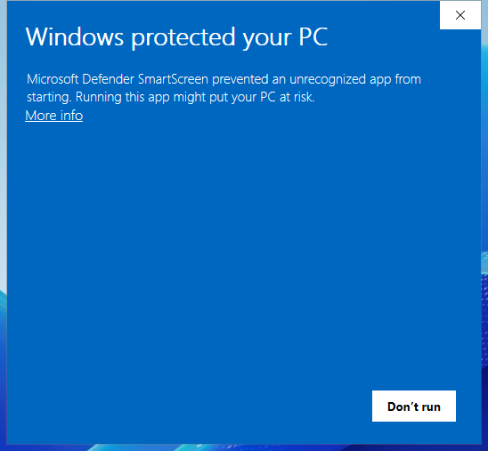
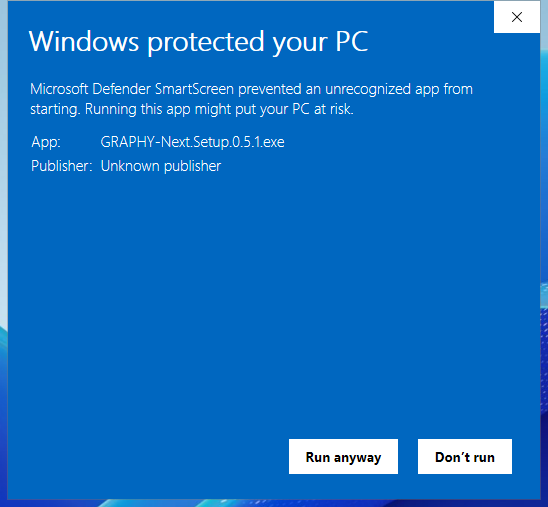
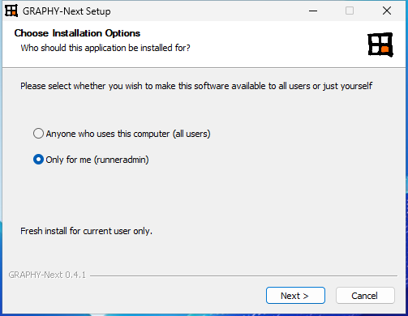
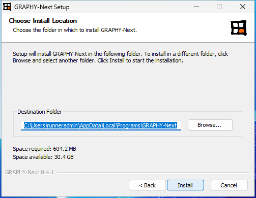
起動すると、最初に「利用条件の確認」が出ます。内容を読み、同意すると使い始められます。
画面は英語版の Windows で撮っています。日本語版では括弧の外の表記になります。更新するときは、新しいインストーラをそのまま実行します（上書き。データは残ります）。
01 / インストール ＞ macOS
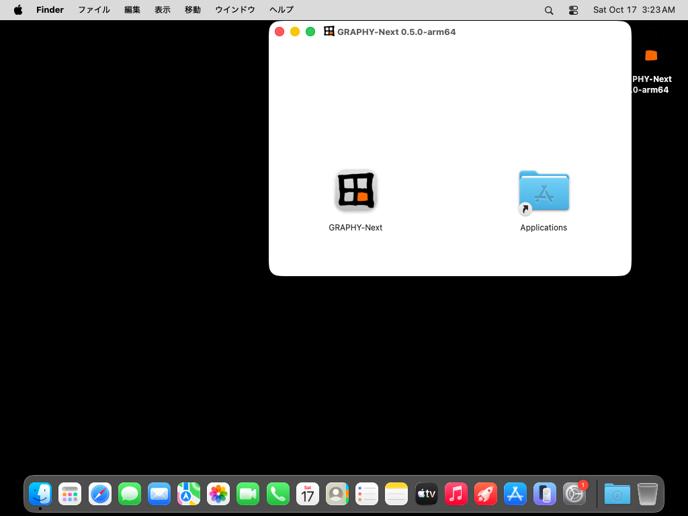
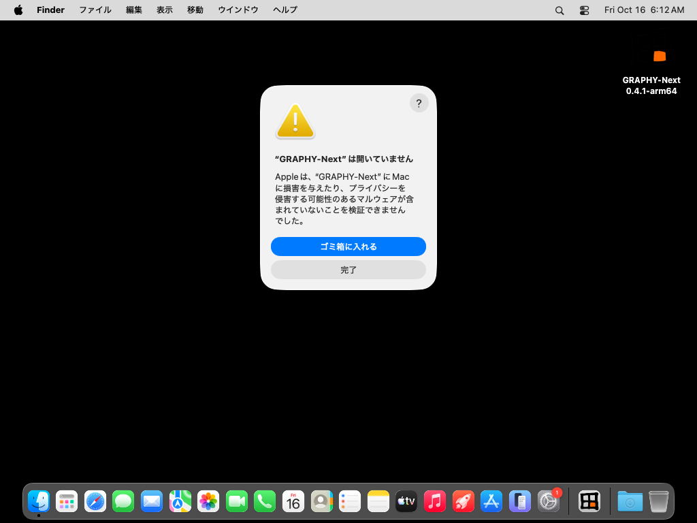
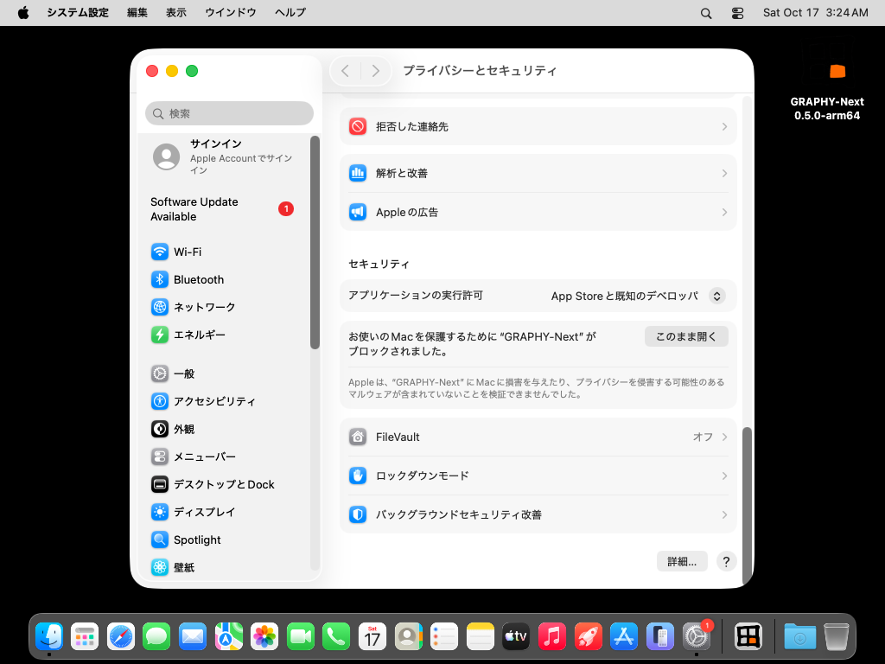
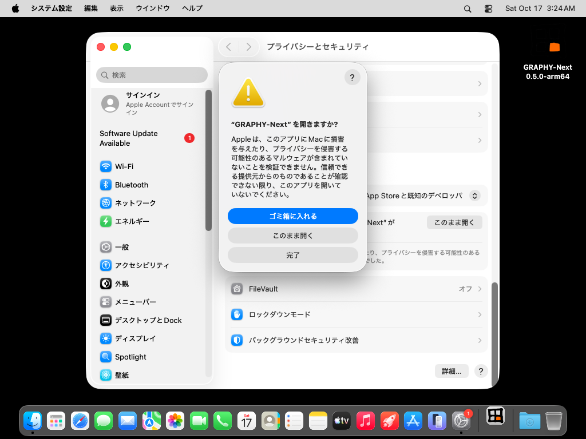
Apple Silicon（M1 以降）は arm64、Intel の Mac は x64 の dmg を使います。違う方を入れると起動しません。
01 / インストール ＞ Linux・データの場所
# Ubuntu / Debian sudo apt install ./graphy-next-desktop_<版>_amd64.deb graphy-next-desktop # アプリの一覧からも起動できます
AppImage は Ubuntu 22.04 以降で止まることがあります。libfuse.so.2 が無いと出たら sudo apt install libfuse2t64（22.04 は libfuse2）。「SUID sandbox helper…」と出る環境では .deb を使ってください。
| OS | 場所 |
|---|---|
| Windows | %APPDATA%\GRAPHY-Next |
| macOS | ~/Library/Application Support/GRAPHY-Next |
| Linux | ~/.config/GRAPHY-Next |
画像の保管庫・データベース・設定・プラグインが入ります。アンインストールしても既定では消えません（手順は Help ＞ アンインストール）。
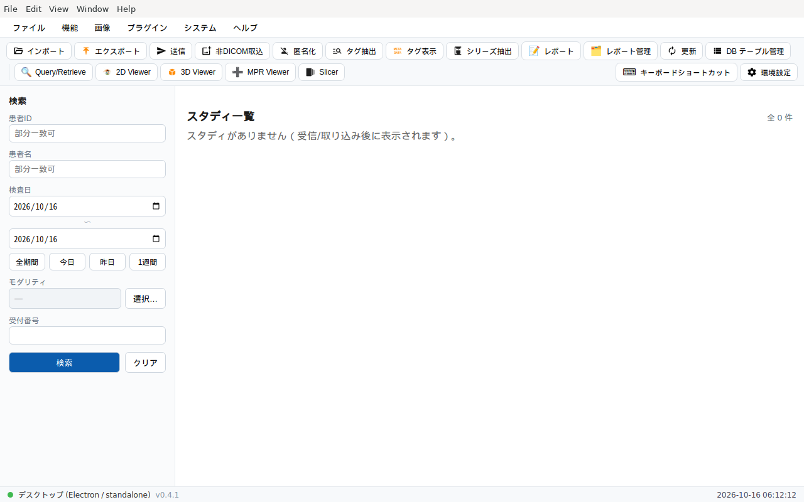
02 / DICOM 接続の基本
DICOM の世界での機器の名前です。半角 16 文字まで。大文字・小文字も区別され、1 文字違うとつながりません。
相手の機器のネットワーク上の住所です。例: 192.168.10.20
相手が DICOM 通信を待ち受けている番号です。11112 や 104 がよく使われます。
GRAPHY-Next に、相手の 3 つを登録検索・取得・送信の相手として使います
相手（PACS）に、GRAPHY-Next の 3 つを登録取得（C-MOVE）では、相手の方から画像を送ってくるため
| 疎通確認 | C-ECHO | つながるかだけを確かめる |
| 検索（Query） | C-FIND | 相手にある検査の一覧をもらう |
| 取得（Retrieve） | C-MOVE | 相手に「ここへ送って」と頼む |
| 送信・受信 | C-STORE | 画像そのものを送る・受ける |
病院の PACS につなぐときは、PACS の管理者（またはメーカー）に、GRAPHY-Next の AE タイトル・IP アドレス・ポートの登録と、検索・取得を許可する設定を依頼してください。疎通確認だけ通って検索できない、の多くはここが原因です（05 章）。
03 / スタンドアロン ＞ この章の例
自分の AE タイトルとポートを確かめる環境設定 ＞ DICOM通信 ＞ 自局
相手（DCM4CHEE）を登録し、疎通確認する環境設定 ＞ DICOM 通信先
相手の側に、GRAPHYNEXT を登録するdcm4chee の管理画面
検索して取得する／送信するQuery/Retrieve の窓、送信
この冊子の IP アドレスは例です。ご自分の環境の値に読み替えてください。dcm4chee を手元で試したいときは、04 章の docker compose で立てられます（AE タイトルを変える 1 行を足さなければ DCM4CHEE になります）。
03 / スタンドアロン ＞ 手順 1 環境設定 ＞ DICOM通信
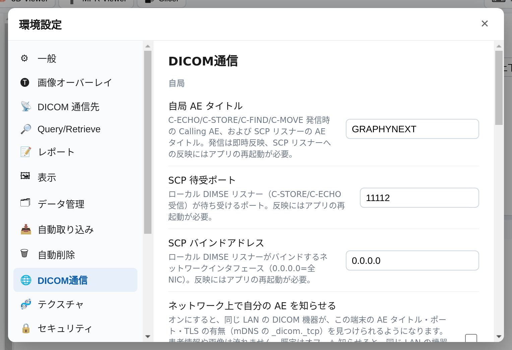
環境設定を開き、左の DICOM通信 を選びます
自局 AE タイトル。既定は GRAPHYNEXT。相手の PACS に登録する名前です
SCP 待受ポート。既定は 11112。相手から画像が届く番号です
受信ポートを変えたときは、アプリを再起動すると反映されます。AE タイトルは、こちらから発信する分にはすぐ反映されます。
同じパソコンで dcm4chee なども動かしていて 11112 が重なるときは、どちらかを別の番号にしてください。Windows のファイアウォールで受信ポートが閉じていると、取得した画像が届きません（05 章）。
03 / スタンドアロン ＞ 手順 2 環境設定 ＞ DICOM 通信先
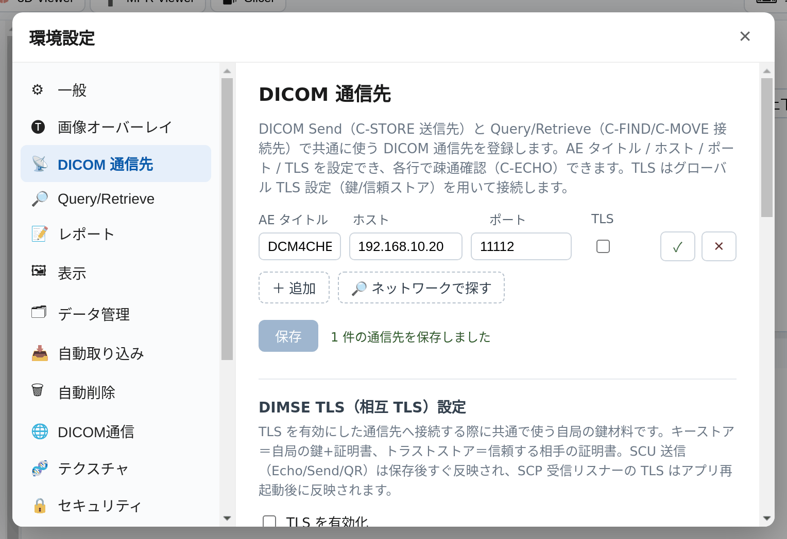
＋追加 で行を足します
相手の AE タイトル・ホスト・ポートを入れます。例: DCM4CHEE / 192.168.10.20 / 11112
疎通確認を押します。緑の ✓ なら、つながっています
保存を押します。押すまで登録されません
赤い ✕ のときは、AE タイトル・IP アドレス・ポートのどれかが違うか、相手が止まっています。画面には理由が出ないので、05 章の表で切り分けます。
図の AE タイトルは、欄の幅のため末尾が隠れています（入力は DCM4CHEE）。ここで登録した相手は、送信と Query/Retrieve の両方で使われます。同じ LAN の機器は「ネットワークで探す」でも見つけられます（相手が対応している場合）。
03 / スタンドアロン ＞ 手順 3 dcm4chee の管理画面（相手側の作業）
ブラウザで http://192.168.10.20:8080/dcm4chee-arc/ui2/ を開き、左上の ≡ ＞ Configuration ＞ タブ AE list ＞ New AET で「Register new application entity」の窓が出ます。
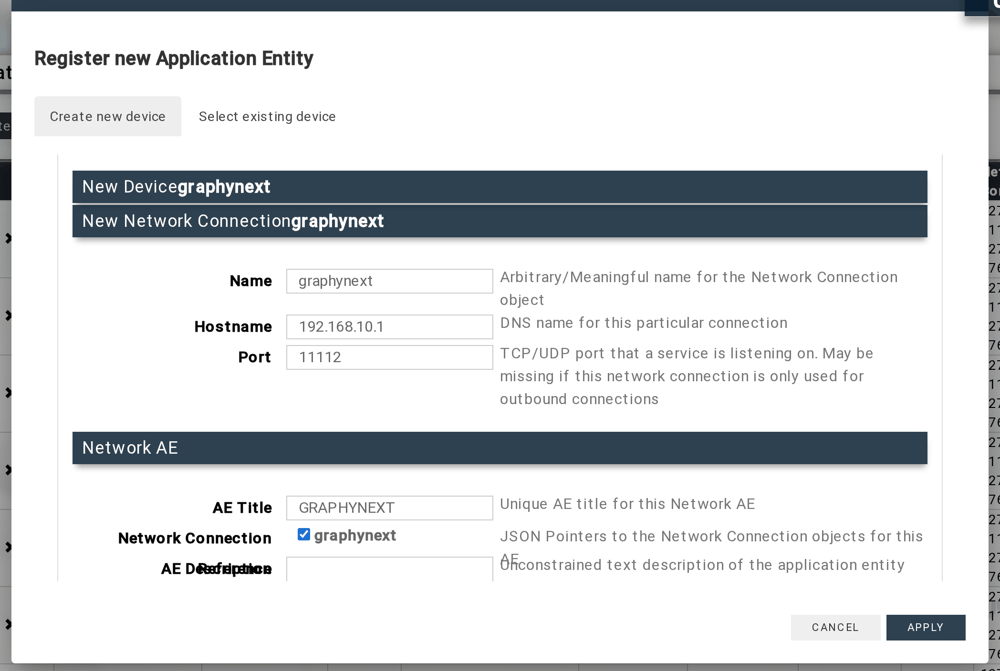
Hostname: GRAPHY-Next のパソコンの IP アドレス（例 192.168.10.1）
Port: GRAPHY-Next の SCP 待受ポート（11112）
AE Title: GRAPHYNEXT（自局 AE タイトルと 1 文字も違わないように）
入力がそろったら APPLY。「Device with the AET created successfully!」と出れば完了
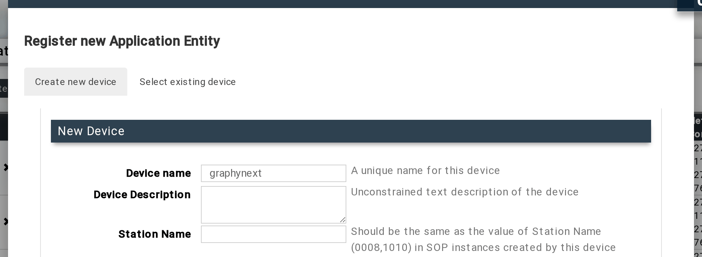
同じ窓の「New Device」を開き、Device name（任意の名前）を入れ、その下の Installed を True にします。どちらも必須で、APPLY の前に入れます
この登録をしないと、取得（C-MOVE）だけが失敗します。疎通確認と検索は通るので、気づきにくい所です。
市販の PACS でも考え方は同じです。「GRAPHYNEXT は、この IP アドレスのこのポートにいる」と相手に教えます。メーカーや管理者に登録を依頼します。
03 / スタンドアロン ＞ 手順 3 登録できたかを確かめる
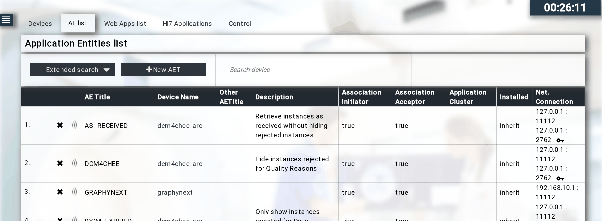
Configuration の AE list タブ
新しく登録するときは New AET
GRAPHYNEXT の行。Hostname と Port が、GRAPHY-Next のパソコンの値になっているか見ます
GRAPHY-Next のパソコンの IP アドレスが変わったら（DHCP など）、ここの Hostname も直します。固定の IP アドレスにしておくと安心です。
03 / スタンドアロン ＞ 手順 4 Query/Retrieve
メイン画面のツールバーの Query/Retrieve を押すと、別の窓で開きます。図は、その窓の上の部分です。
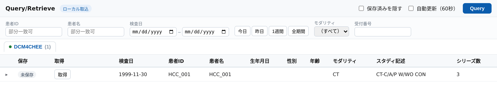
登録した相手ごとにタブが出ます。疎通確認が通らない相手はタブに出ません
検査日の既定は今日です。過去の検査を探すときは 全期間 や日付の範囲を選びます
Query で検索します。患者 ID・患者名・モダリティでも絞れます
行の 取得 で、その検査をこのパソコンへ取り寄せます。行を開くと、シリーズ単位でも取得できます
件数の多い PACS では、条件を付けずに検索しないでください。相手に負荷がかかり、PACS によっては拒否されます。
03 / スタンドアロン ＞ 手順 4 取得できたかを確かめる
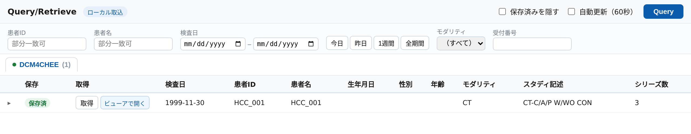
取得が終わると、行が 保存済 になります。「未保存」のまま変わらないときは、相手側の登録（手順 3）を確かめます
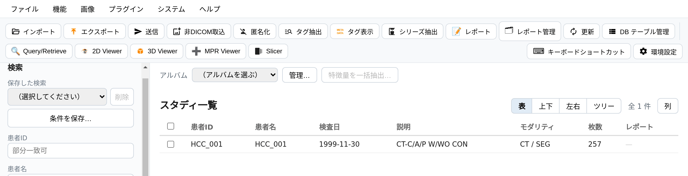
メイン画面で検索すると、取得した検査が出ます（検査日の既定は今日なので、全期間 などを選びます）。行を選んで 2D Viewer などで開けます
03 / スタンドアロン ＞ 手順 4 DICOM 送信
メイン画面で検査の行を選び、ツールバーの 送信 を押します。送信先に、登録した相手を選びます
送信 を押します
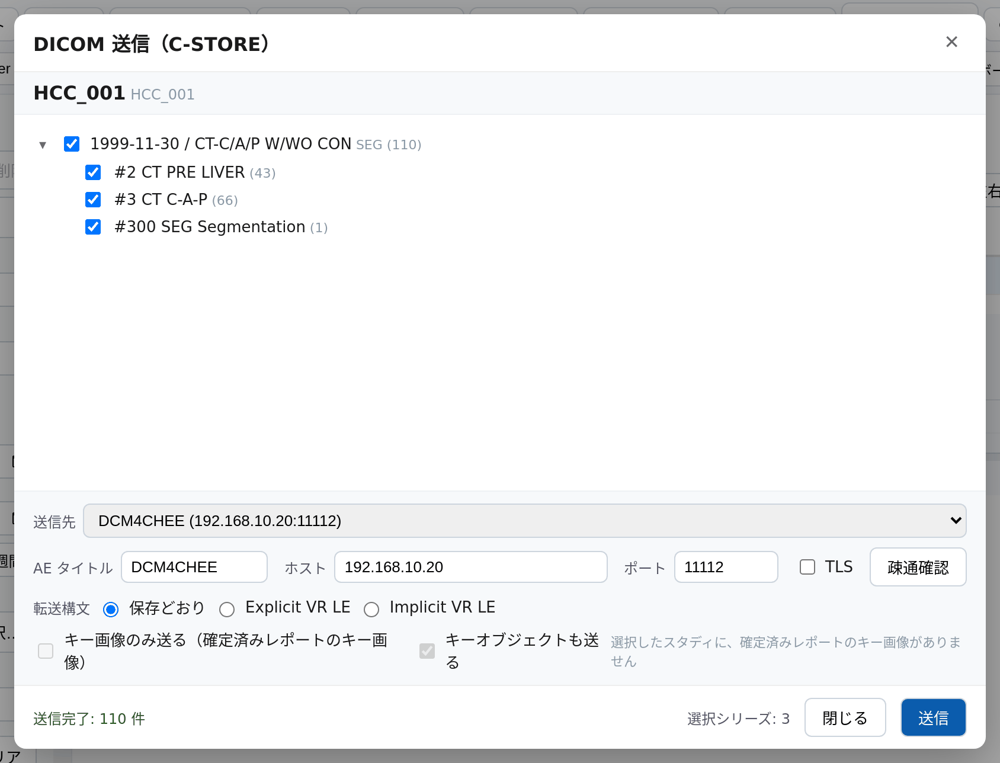
「送信完了」と件数が出れば、相手に届いています
相手から GRAPHY-Next へ送ってもらう（受信する）こともできます。相手の送信先に、GRAPHYNEXT・IP アドレス・11112 を登録してもらいます。受信した検査は、そのままメイン画面に出ます。
04 / Web モード ＞ この章の例
GRAPHY-Next が、外部の PACS に検索（C-FIND）と取得の依頼（C-MOVE）を出します
外部の PACS は、画像を自分サーバーへ送りますGRAPHY-Next ではなく GRAPHYPACS が宛先
GRAPHY-Next は、自分サーバーから DICOMweb で読んで表示します
dcm4chee の AE タイトルは、何もしないと DCM4CHEE です。外部の PACS も dcm4chee だと名前が重なり、外部の PACS が「DCM4CHEE へ送って」を自分自身のことだと受け取ってしまいます。そこで、自分サーバーを GRAPHYPACS にします。
サーバーに要るもの: Docker（dcm4chee 用）、Java 21（GRAPHY-Next 用）、dcm4che のコマンド一式（Q/R を使う場合。配布元: https://sourceforge.net/projects/dcm4che/files/dcm4che3/ の dcm4che-5.x.x-bin.zip）。
04 / Web モード ＞ 手順 1 自分サーバーを立てる
GRAPHY-Next のリポジトリにある deploy/dcm4chee/docker-compose.yml を使います。ldap の environment に 1 行足すだけです。
services:
ldap:
image: dcm4che/slapd-dcm4chee:2.6.7-33.1
environment:
STORAGE_DIR: /storage/fs1
AE_TITLE: GRAPHYPACS # ← この 1 行を足す
# db・arc はそのまま
docker compose -f deploy/dcm4chee/docker-compose.yml up -d # 起動したかを確かめる（数十秒〜数分かかります） curl -i http://192.168.10.10:8080/dcm4chee-arc/aets/GRAPHYPACS/rs/studies # → HTTP 204（まだ画像が無い）か 200 が返れば準備完了
AE_TITLE は、最初の起動のときだけ効きます。一度 DCM4CHEE のまま起動してしまったら、docker compose down のあと deploy/dcm4chee/data を消してから起動し直します（中の画像も消えます）。
URL の aets/ の次が AE タイトルです違う名前で開くと 404「No such Application Entity」
起動の途中は、つながりませんcurl が失敗するあいだは、まだ初期化中です
管理画面http://192.168.10.10:8080/dcm4chee-arc/ui2/
この compose は試用向け（認証なし）です。院内で常用するときは、dcm4chee の公式の手引きに沿って、認証付きの構成にしてください。
04 / Web モード ＞ 手順 2 GRAPHY-Next を起動する
java -jar graphy-next-backend.jar \ --spring.profiles.active=web \ --server.port=8090 \ --graphy.dicom.dicomweb.base-url=\ http://192.168.10.10:8080/dcm4chee-arc/aets/GRAPHYPACS/rs \ --graphy.dicom.dcm4che-home=/opt/dcm4che-5.33.1
server.port | ブラウザで開くポート。dcm4chee の 8080 と重ならない番号にします |
dicomweb.base-url | 自分サーバーの DICOMweb の URL。AE タイトルまで含めます |
dcm4che-home | dcm4che を展開したフォルダ（bin/findscu がある所）。Q/R に使います |
ブラウザで http://192.168.10.1:8090/ を開きます。http://192.168.10.1:8090/api/status の mode が web なら、Web モードで動いています。
Web モードにはログインがありません。サーバーに届く人は誰でも開けます。閉じたネットワークの中だけで使い、外部に公開しないでください。
自分サーバーが Bearer トークンを求める構成のときだけ、--graphy.dicom.dicomweb.bearer-token= を足します。
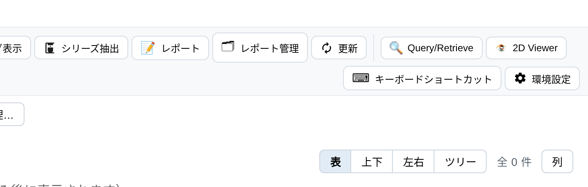
Query/Retrieve。外部の PACS から取り寄せるときに使います（別のタブで開きます）
環境設定。次のページで、通信先と取得先を設定します
最初は、自分サーバーに画像が無いので一覧は空です。
04 / Web モード ＞ 手順 3 環境設定
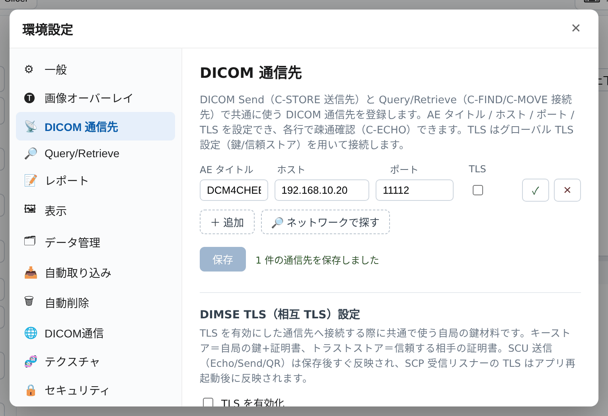
環境設定 ＞ DICOM 通信先（スタンドアロンと同じ画面です）
＋追加
外部の PACS: DCM4CHEE / 192.168.10.20 / 11112
疎通確認で ✓ 4 保存
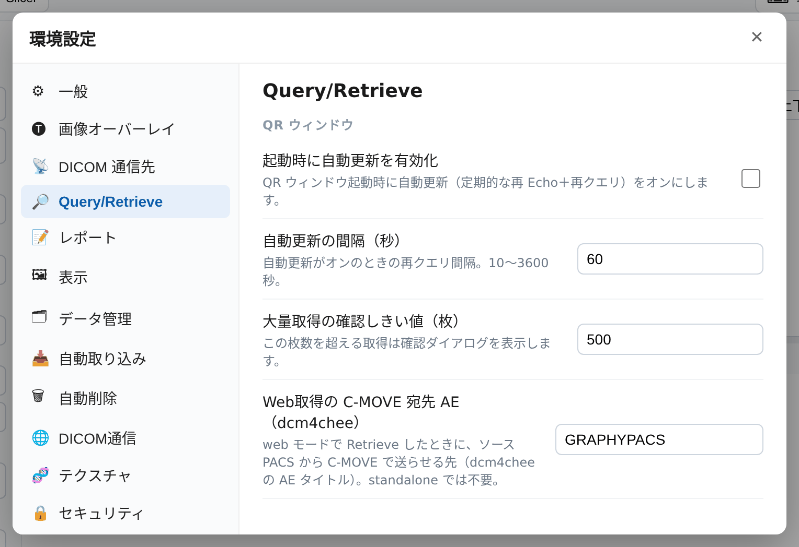
環境設定 ＞ Query/Retrieve
左の Query/Retrieve を選びます
Web取得の C-MOVE 宛先 AE（dcm4chee）に、自分サーバーの AE タイトル GRAPHYPACS を入れます
ここが空か、名前が違うと、取得した画像が自分サーバーに届きません。
04 / Web モード ＞ 手順 4 外部の PACS の管理画面（相手側の作業）
外部の PACS の管理画面（http://192.168.10.20:8080/dcm4chee-arc/ui2/）で、≡ ＞ Configuration ＞ AE list ＞ New AET。03 章の手順 3 と同じ窓です。
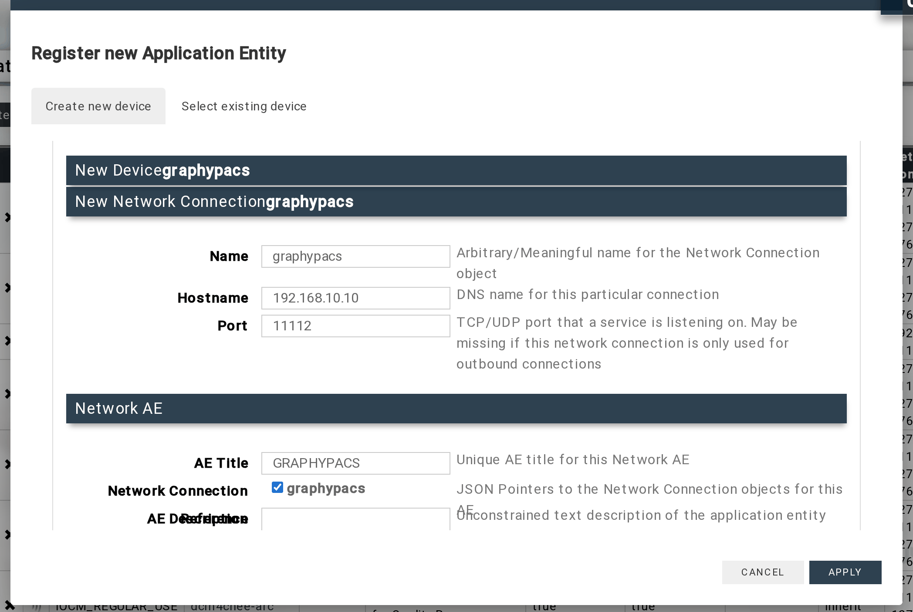
Hostname: 自分サーバーの IP アドレス（192.168.10.10）。GRAPHY-Next のサーバーではありません
Port: 自分サーバーの DICOM ポート（11112）
AE Title: GRAPHYPACS
APPLY
「New Device」の Device name と、その下の Installed（True）も入れます
スタンドアロンでは相手に GRAPHYNEXT を登録しました。Web モードで画像を受けるのは自分サーバーなので、登録するのは GRAPHYPACS です。
相手が「検索を依頼してくる機器」も登録制にしている場合は、GRAPHYNEXT（GRAPHY-Next のサーバーの IP アドレス）の登録も依頼します。
04 / Web モード ＞ 手順 5 Query/Retrieve
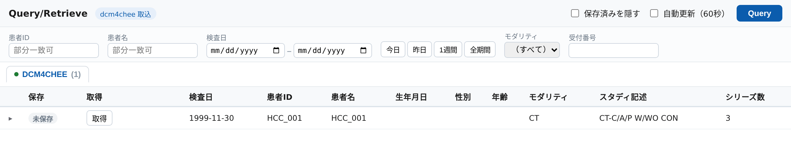
外部の PACS のタブ
全期間 など、検査日の条件（既定は今日）
Query
行の 取得
保存済 になれば、自分サーバーに入っています。件数は、自分サーバーに問い合わせて数えています
「未保存」のまま変わらないときは、手順 3 の宛先 AE と、手順 4 の相手側の登録を確かめます（05 章）。
04 / Web モード ＞ 手順 5 表示して確かめる
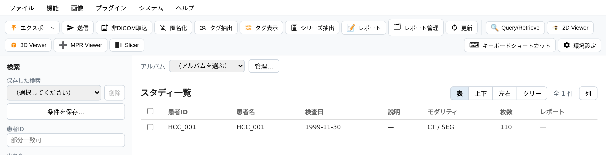
メイン画面で検索すると、自分サーバーに入った検査が出ます。行を選んで、ツールバーからビューアを開きます
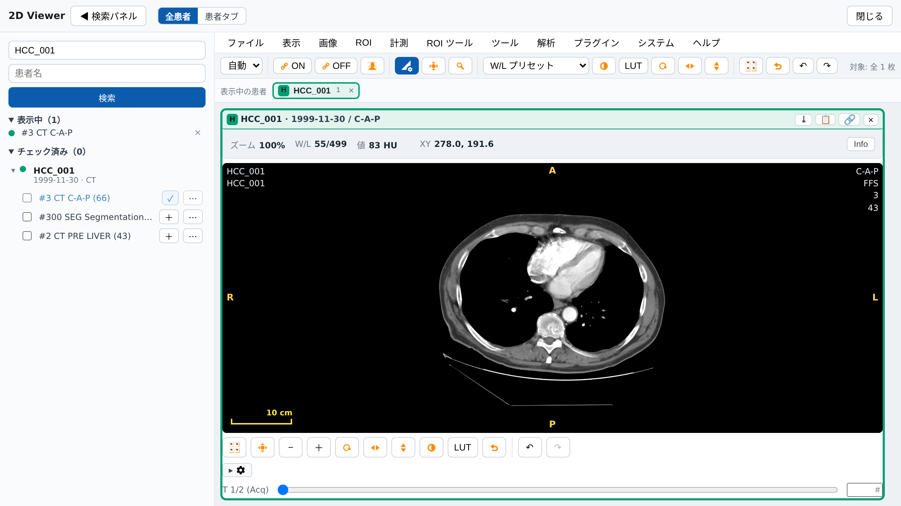
2D ビューアで開いた所です。画像は、自分サーバーから DICOMweb で読み込んでいます。
ビューアで作ったリスライスや SEG などを保存すると、自分サーバーに書き戻されます（STOW-RS）。
05 / つながらないとき ＞ 切り分けの順番
ping、疎通確認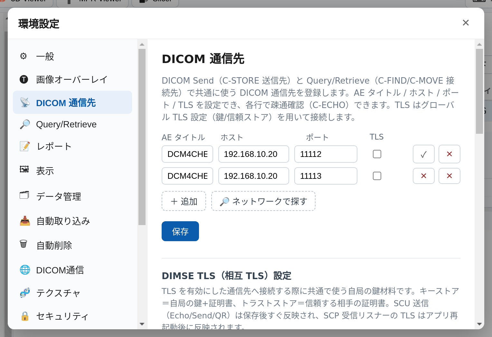
緑の ✓: 段 1・2 は通っています
赤い ✕: 段 1 か 2 で止まっています（この図は、ポート番号を違えた行）
疎通確認の ✓ は、検索と取得ができる証拠ではありません。確かめているのは段 2 までです。段 3・4 は、相手側の別の設定で決まります。
✕ の理由は画面に出ません。理由はログに出ます（見方は「調べ方 1」のページ）。
05 / つながらないとき ＞ 症状別の表（1）接続・検索・取得
| 症状 | ログ・相手側に出るもの | 原因と直し方 |
|---|---|---|
| 疎通確認が ✕（すぐ出る） | ConnectException: Connection refused | ポート番号が違う、または相手の DICOM サービスが止まっている。相手の待受ポートを確かめる |
| 疎通確認が ✕（数秒〜かかる） | NoRouteToHostException、タイムアウト | IP アドレスが違う、相手の電源・LAN、途中のファイアウォール。ping で届くか確かめる |
| 疎通確認が ✕（相手は動いている） | A-ASSOCIATE-RJ … called-AE-title-not-recognized | 相手の AE タイトルが違う（大文字・小文字、空白）。相手の設定画面の表記どおりに入れる |
| 同上 | A-ASSOCIATE-RJ … calling-AE-title-not-recognized | こちらの AE タイトルが相手に登録されていない。相手に GRAPHYNEXT の登録を依頼する |
| Q/R の窓に、相手のタブが出ない | （疎通確認が通っていない） | Q/R は、疎通確認が通った相手だけをタブにする。上の 4 行で直す |
| Q/R で 0 件（「該当するスタディがありません」） | — | 検査日の既定が今日。全期間や日付の範囲を選んで Query し直す |
| Q/R のタブに赤いエラー 「findscu(STUDY) 失敗 … No Presentation Context …」 | result: 3 - abstract-syntax-not-supported | 相手が、こちらに検索サービスを許可していない。疎通確認は ✓ のまま。次のページ以降の調べ方へ |
| 条件を変えても、ずっと 0 件 | C-FIND-RSP[status=c000H]・a900H など | 相手が検索をエラーで返しているのに、画面は 0 件に見える。次のページ以降の調べ方へ |
| ［取得］しても「未保存」のまま（エラーなし） | 相手側: C-MOVE-RSP[status=a801H, Unknown AE: GRAPHYNEXT] | 相手に、宛先 AE が登録されていない。03 章 手順 3（Web モードは 04 章 手順 3・4） |
| ［取得］しても「未保存」のまま（登録はある） | 相手側: 送信の失敗（接続できない） | 相手に登録した IP アドレス・ポートが違う、こちらの受信ポートがファイアウォールで閉じている、IP アドレスが変わった |
v0.6.2 では、取得の失敗と、相手がエラーで返した検索は、画面にエラーとして出ません。「未保存のまま」「ずっと 0 件」は、下の 3 行を疑ってください。
05 / つながらないとき ＞ 症状別の表（2）起動・Web モード
| 症状 | 原因と直し方 |
|---|---|
| 起動時に「Port 8080 is already in use…」と出て止まる（デスクトップ版） | 内部で使う 8080 番を、ほかのソフト（dcm4chee など）が使っている。そのソフトを止めるか、環境変数 GRAPHY_BACKEND_PORT に別の番号（例 18080）を設定して起動する |
| 起動に失敗する。ログに「DICOM SCP のバインドに失敗しました (0.0.0.0:11112)」 | 受信ポート 11112 を、ほかのソフトが使っている。そのソフトを止めて起動し、環境設定 ＞ DICOM通信 の SCP 待受ポートを別の番号に変える（相手側の登録も同じ番号に直す） |
| Web モードのメイン画面に「取得に失敗しました: … 404 … No such Application Entity: DCM4CHEE」 | base-url の AE タイトルが、自分サーバーの実際の名前と違う。…/aets/GRAPHYPACS/rs のように直して起動し直す |
| Web モードのメイン画面が「読み込み中…」のまま、または取得に失敗 | 自分サーバーが止まっている・起動の途中・IP アドレス違い。curl -i <base-url>/studies が 200 か 204 を返すか確かめる |
| Web モードの Q/R に「dcm4che ツール 'findscu' が見つかりません」 | サーバーに dcm4che のコマンドが無い。入手して展開し、--graphy.dicom.dcm4che-home= に指定して起動し直す（04 章 手順 2） |
| Web モードで［取得］しても「未保存」のまま | ①環境設定 ＞ Query/Retrieve の宛先 AE が空・違う ②外部の PACS に GRAPHYPACS が未登録 ③登録した IP アドレスが GRAPHY-Next のサーバーになっている（正しくは自分サーバー） |
| dcm4chee を起動した直後につながらない | 初期化に数十秒〜数分かかる。管理画面か curl が応えるまで待つ |
| 自分サーバーの AE タイトルが DCM4CHEE のまま | AE_TITLE は最初の起動のときだけ効く。データを消して起動し直す（04 章 手順 1） |
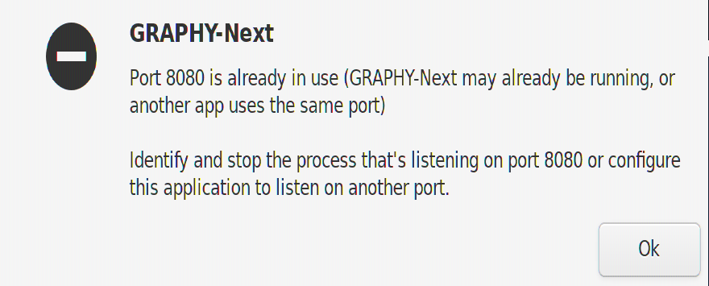
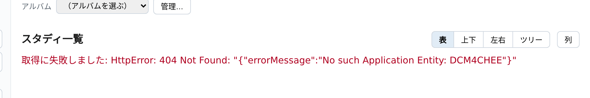
base-url の AE タイトルが違うときの表示（Web モードのメイン画面）
05 / つながらないとき ＞ 「疎通確認は通るのに、検索できない」
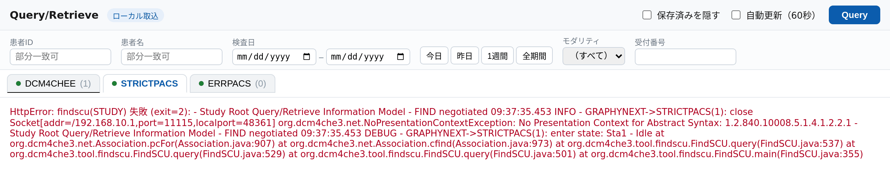
A 赤いエラーが出る。「No Presentation Context for Abstract Syntax … Study Root … FIND」＝接続はできたが、検索サービスを断られた
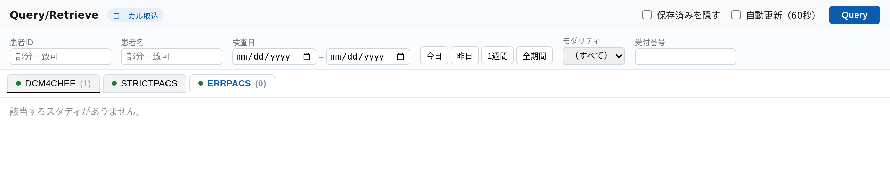
B エラーは出ず、0 件。相手が検索を受け付けたあと、エラーの応答を返している場合があります（この図は、相手がエラー 0xC000 を返した例）
DICOM の接続では、使うサービス（疎通確認、検索、取得、保存…）ごとに、相手が受けるかどうかを決めます。
疎通確認（Verification）は、ほとんどの機器が誰にでも許します。一方、検索・取得は、登録した相手にだけ許す設定の PACS が多くあります。
また、検索の条件の書き方（部分一致、使える項目）は PACS ごとに違います。
次のページから、何を送っているかを知り、ログを取り、同じ検索を手で実行して、相手の返事を読みます。
05 / 「疎通確認は通るのに、検索できない」 ＞ GRAPHY-Next が送る検索
| 項目 | GRAPHY-Next v0.6.2 が送る内容 |
|---|---|
| 発信元の AE タイトル | 自局 AE タイトル（既定 GRAPHYNEXT） |
| 検索の方式（情報モデル） | Study Root Query/Retrieve – FIND（1.2.840.10008.5.1.4.1.2.2.1）。Patient Root は使いません |
| 検索の段 | STUDY（検査の一覧）→ 行を開くと SERIES |
| 転送構文の提案 | Implicit VR Little Endian、Explicit VR Little Endian、Explicit VR Big Endian |
| 返してほしい項目 | StudyInstanceUID、PatientID、PatientName、PatientBirthDate、PatientSex、StudyDate、StudyDescription、AccessionNumber、ModalitiesInStudy、NumberOfStudyRelatedSeries、NumberOfStudyRelatedInstances（太字は、対応が任意の項目） |
| 患者 ID・患者名で絞る | 前後に * を付けた部分一致で送ります（例 *HCC*） |
| モダリティで絞る | ModalitiesInStudy に 1 つだけ指定 |
| 検査日で絞る | 単日 20261114、または範囲 20261101-20261114 |
| 文字コードの指定 | 付けません（SpecificCharacterSet なし） |
発信元の AE タイトルごとに、検索の許可が要る→ 赤いエラー（断られる）
Study Root を受けない（Patient Root だけ）→ 赤いエラー
条件なし・広すぎる検索を拒否する、件数に上限がある→ エラーの応答、または途中で打ち切り
先頭の *（後方一致・部分一致）を受け付けない→ 0 件、またはエラーの応答
日本語の患者名での検索文字コードの指定が無いため、正しく照合されないことがあります
どれに当たるかは、相手の PACS の仕様（DICOM 適合性宣言書＝コンフォーマンス・ステートメント）と、次のページの方法で確かめます。v0.6.2 には、検索の方式や項目を画面から変える設定はありません。
05 / 「疎通確認は通るのに、検索できない」 ＞ 調べ方 1
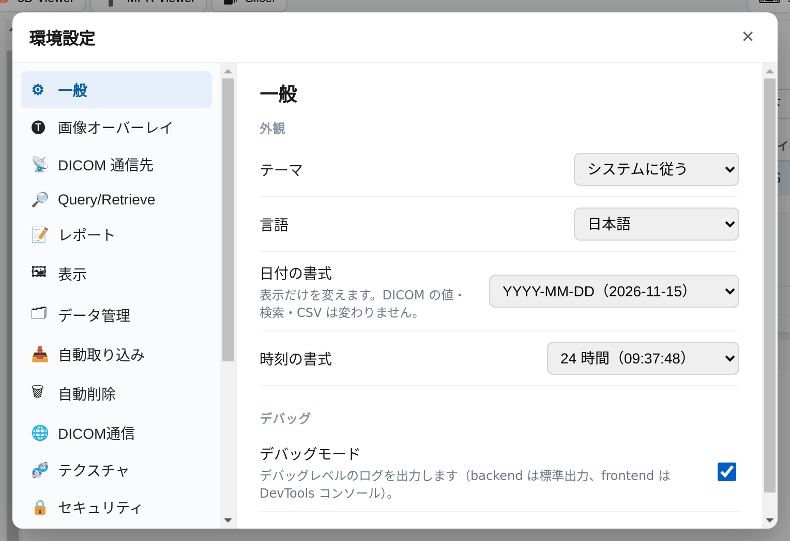
環境設定 ＞ 一般 ＞ デバッグモード をオンにします。調べ終わったらオフに戻します
デスクトップ版のログは、端末（ターミナル）から起動したときに、その端末に出ます。
# Linux（.deb） graphy-next-desktop 2>&1 | tee graphy.log # Windows（コマンドプロンプト。インストール先で） GRAPHY-Next.exe # macOS（ターミナル） /Applications/GRAPHY-Next.app/Contents/MacOS/GRAPHY-Next
Query を押すと、ログに次の 1 行が出ます。これが、実際に実行した検索コマンドです。
DEBUG … Dcm4cheTools : exec: …/dcm4che/bin/findscu -b GRAPHYNEXT -c DCM4CHEE@192.168.10.20:11112 -L STUDY -r StudyInstanceUID -r PatientID … -m StudyDate=20261114 --out-dir …
疎通確認の結果と理由も、同じログに出ます。
INFO … DicomEchoScu : C-ECHO ok: DCM4CHEE@192.168.10.20:11112 (4 ms) WARN … DicomEchoScu : C-ECHO failed to …: A-ASSOCIATE-RJ[… ]
インストール版は、ログをファイルに残しません。Web モードは、環境変数 LOGGING_LEVEL_COM_VIS_GRAPHYNEXT=DEBUG を付けて起動すると、端末に同じ行が出ます。
05 / 「疎通確認は通るのに、検索できない」 ＞ 調べ方 2
GRAPHY-Next に同梱の findscu（dcm4che）を、端末から直接実行します。ログの exec: の行を写すのが確実です。
# Linux の例（同梱の Java を使う） export JAVA_HOME=<インストール先>/resources/jre <インストール先>/resources/dcm4che/bin/findscu \ -b GRAPHYNEXT -c DCM4CHEE@192.168.10.20:11112 \ -L STUDY -m StudyDate=20261114 \ -r StudyInstanceUID -r PatientID -r PatientName
-b | こちらの AE タイトル（相手に登録した名前） |
-c | 相手の AE タイトル@IP アドレス:ポート |
-L | 検索の段（STUDY / SERIES） |
-m | 絞り込みの条件（項目=値） |
-r | 返してほしい項目 |
-M | 検索の方式。省くと StudyRoot。-M PatientRoot で切り替え |
同梱の場所: インストール先の resources/dcm4che/bin/（Windows は findscu.bat）と resources/jre。macOS は GRAPHY-Next.app/Contents/Resources/ の下。Linux は実機で確かめました。Windows・macOS の場所と起動方法は、配布物の構成からの記載で、実機では未確認です。
① 接続を受け入れたか、検索サービスを受けたか GRAPHYNEXT->DCM4CHEE(1) >> A-ASSOCIATE-AC PresentationContext[id: 1 result: 0 - acceptance ← 受けた result: 3 - abstract-syntax-not-supported ← 断られた ② こちらが送った条件 << 1:C-FIND-RQ Dataset: (0008,0020) DA [20261114] StudyDate (0008,0052) CS [STUDY] QueryRetrieveLevel (0010,0020) LO [] PatientID ③ 相手の返事（1 件ごとに 1 つ、最後に終了の 1 つ） >> 1:C-FIND-RSP[pcid=1, status=ff00H ← 1 件見つかった >> 1:C-FIND-RSP[pcid=1, status=0H ← 正常に終了 >> 1:C-FIND-RSP[pcid=1, status=a900H, errorComment=Missing PatientID (0010,0020)
接続そのものを断られたときは、① の代わりに A-ASSOCIATE-RJ と理由が出ます。
05 / 「疎通確認は通るのに、検索できない」 ＞ 調べ方 3
| status | 意味 |
|---|---|
0H | 正常に終了 |
ff00H ff01H | 1 件見つかった（ff01H は、対応していない任意の項目があった） |
a700H | 相手の資源不足（件数が多すぎる、など） |
a900H | 検索の条件が、方式・段と合っていない（必須の項目が無い、など） |
c000H〜 | 相手が処理できなかった。errorComment に理由が出ることがあります |
fe00H | 中止された |
v0.6.2 は、相手がエラーの status を返しても、画面では 0 件に見えます（findscu が正常終了として終わるため）。0 件が続くときは、手で実行して status を見てください。
| 試すこと | 通ったら分かること |
|---|---|
-r を StudyInstanceUID だけにする | 任意の返却項目（件数、ModalitiesInStudy）を相手が嫌っている |
-m StudyDate= 単日だけにする | 条件なし・広い検索を相手が拒否している |
-m PatientID= を * なしの完全一致に | 部分一致（先頭の *）を相手が受け付けない |
-m PatientID=ABC*（前方一致）に | 後方・部分一致だけが使えない |
-M PatientRoot -L PATIENT に | 相手は Patient Root だけを受ける |
-b を、相手に登録済みの別の AE タイトルに | こちらの AE タイトルに検索の許可が無い |
-m SpecificCharacterSet=… を足す | 日本語の検索に文字コードの指定が要る |
実測の例（dcm4chee）: -M PatientRoot -L STUDY で患者 ID を付けないと a900H / Missing PatientID が返り、0 件になります。
通る形が分かったら、その条件と出力を添えて、GRAPHY-Next の開発元（GitHub の Issues）へお知らせください。相手が ① で断っている場合は、PACS の管理者・メーカーに「AE タイトル GRAPHYNEXT に Study Root の Query/Retrieve（C-FIND・C-MOVE）を許可してほしい」と依頼します。
05 / つながらないとき ＞ 取得できないとき・問い合わせの前に
# 手で取得を依頼する（--dest が、画像の届け先の AE タイトル） …/dcm4che/bin/movescu -b GRAPHYNEXT \ -c DCM4CHEE@192.168.10.20:11112 --dest GRAPHYNEXT \ -L STUDY -m StudyInstanceUID=<検査の UID> >> 1:C-MOVE-RSP[pcid=1, status=a801H, errorComment=Unknown AE: GRAPHYNEXT ← 宛先が未登録
| status | 意味と直し方 |
|---|---|
a801H | 宛先の AE タイトルを相手が知らない → 相手に登録する |
a702H | 相手が届け先へ送れなかった → 登録した IP アドレス・ポート、こちらのファイアウォール |
b000H | 一部だけ届いた → 相手のログで失敗した画像を確かめる |
0H | 正常に終了（届いた件数は NumberOfCompletedSuboperations） |
Web モードでは --dest が自分サーバー（GRAPHYPACS）になります。
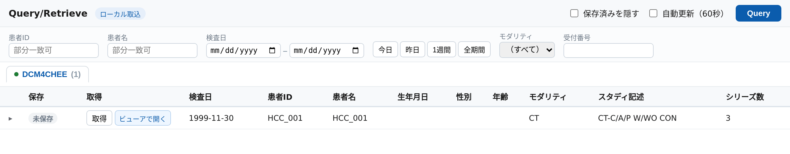
宛先が未登録のまま［取得］した所。エラーは出ず、未保存のままです
GRAPHY-Next の版、OS、スタンドアロンか Web モードか
こちらと相手の AE タイトル・IP アドレス・ポート相手の PACS の製品名と版
どの段まで通るか疎通確認 ／ 検索 ／ 取得
ログの exec: の行と、手で実行した出力患者名・患者 ID は消してください